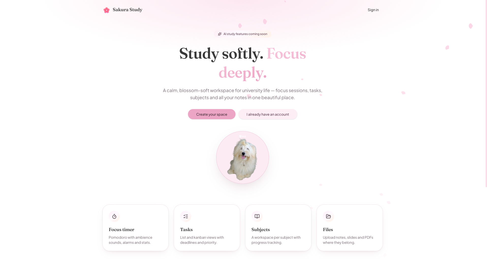
01
Sakura Study
Ongoing
A study-focused application designed to help students organize academic routines and learning activities. AI-powered features are still in development.
Role — Project developer / creator
Information Technology Student · Aspiring Developer · Creative Designer
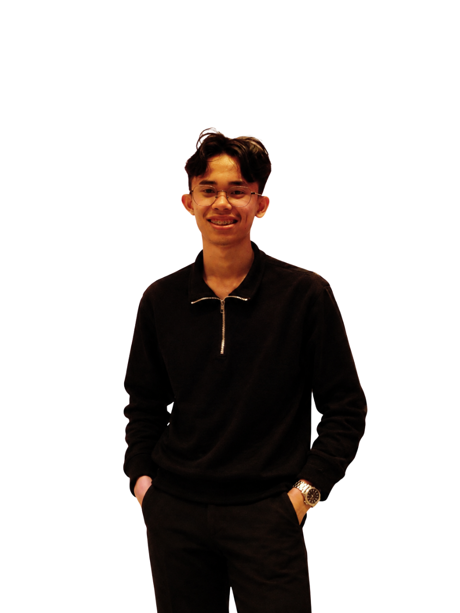
I'm an Information Technology student with a growing interest in software development and digital design. I enjoy turning ideas into functional digital experiences — whether through writing code, building applications, or creating visual identities.
02 / About
My interests extend beyond programming into visual communication, graphic design, and creative problem-solving. I enjoy exploring how technology and design work together to create meaningful experiences — from academic tools and web applications to publication layouts and brand identities.
I'm currently building my foundation in programming and web development while exploring the broader possibilities of software engineering.
EDUCATION
College of Technologies
Bachelor of Science in Information Technology
03 / Expertise
Still growing in most of this — think of it as a working map, not a scorecard.
04 / Selected work

01
Ongoing
A study-focused application designed to help students organize academic routines and learning activities. AI-powered features are still in development.
Role — Project developer / creator
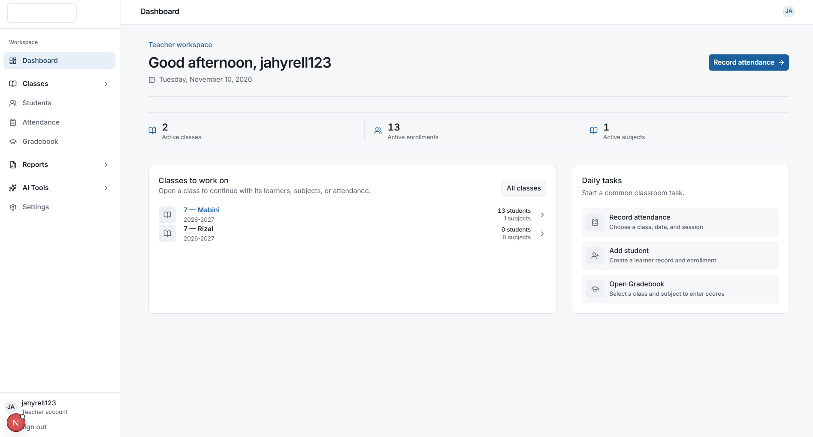
02
Ongoing
A teacher-focused academic record system for Junior High School teachers — class management, student records, grading, and reports.
Role — Founder / Individual developer
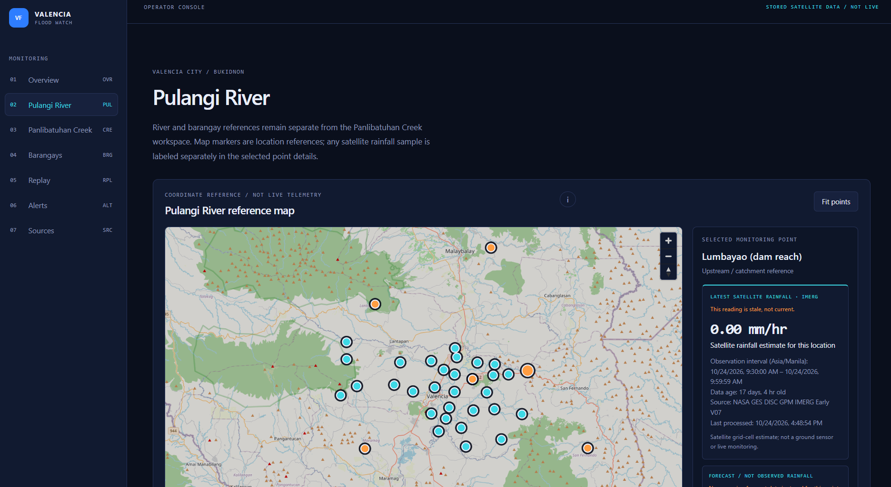
03
Ongoing
A developing digital project that demonstrates my interest in building practical, technology-based solutions.
Role — Project developer
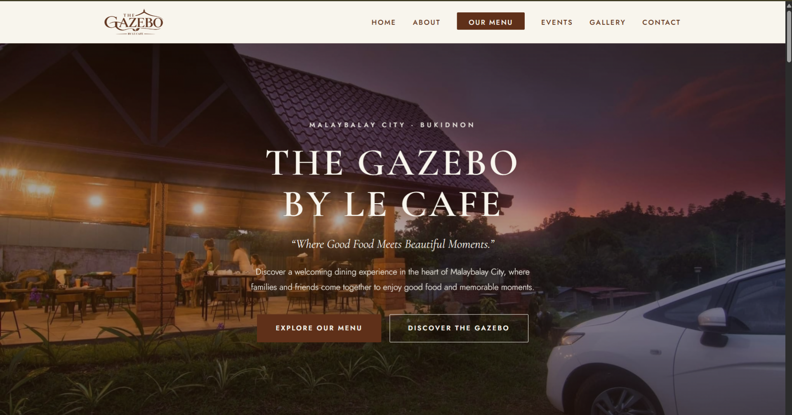
04
Academic group project
A collaborative website proposal and branding project for a local restaurant's digital presence — developed for IT 111.
Contribution — Branding and website design
05 / Beyond the code
A collection of creative works showcasing my passion for visual storytelling, publication design, branding, and graphic design.
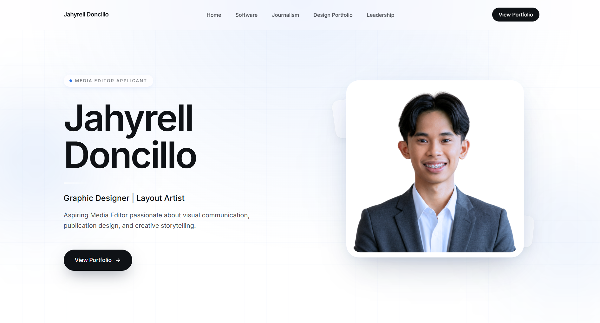
Developed for my applications to Collegianer and COT-SBO — publication layouts, editorial design, and journalism work.
Visit website ↗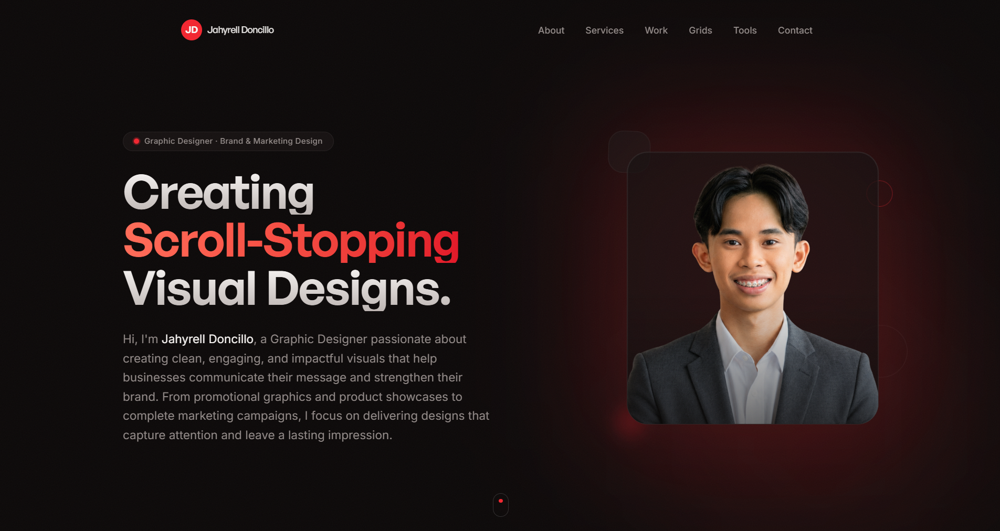
Branding, marketing graphics, and promotional materials created for online creative opportunities.
Visit website ↗06 / Experience
Publication layout and design for the College of Technologies Student Body Organization.
Layout and editorial design contributions for the university publication.
Earlier creative leadership experience in school publication work.
Recognition for layout and design work at the regional level.
Journalism and press conference participation in the layout/design category.
Ongoing involvement in editorial production and publication design work.
Continued participation in school organizations alongside creative and technical work.
Selected certificates and recognitions. Click any image to view it at full size.
08 / Highlights
A visual collection of projects, recognitions, publication work, creative leadership, and speaking engagements that reflect my growth as a student, designer, and aspiring technology professional.
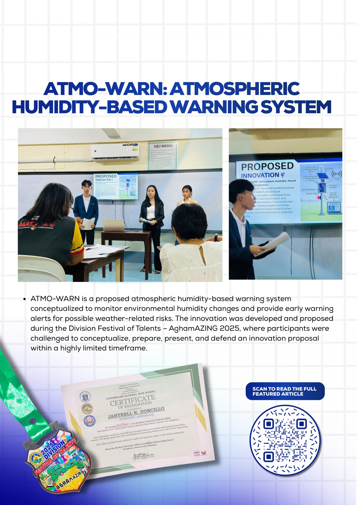
01Atmospheric humidity-based warning system proposal
View full image ↗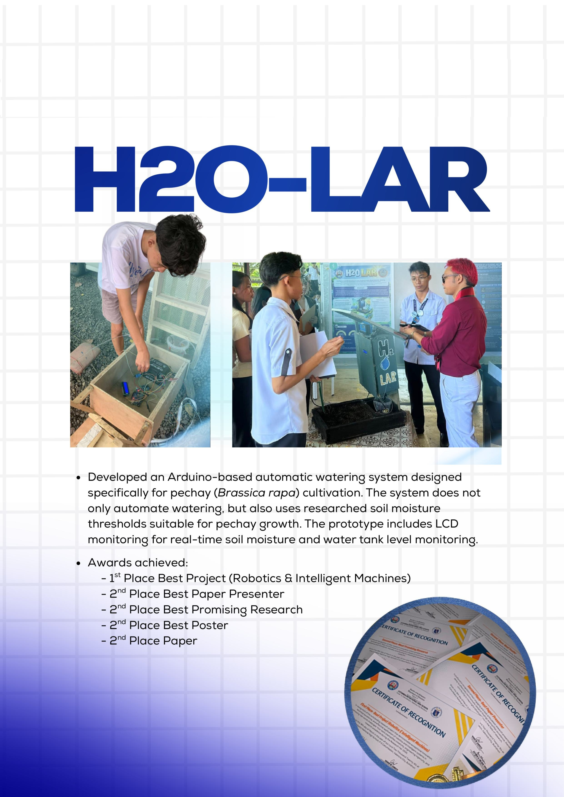
02Automated pechay watering system & research recognition
View full image ↗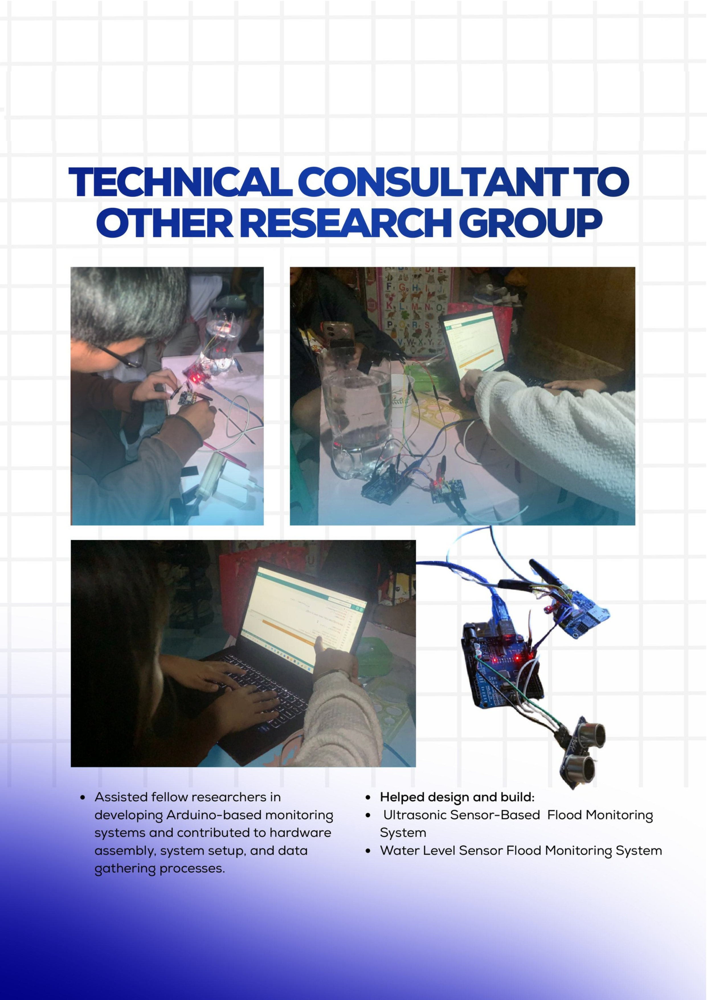
03Arduino monitoring systems & flood-monitoring prototypes
View full image ↗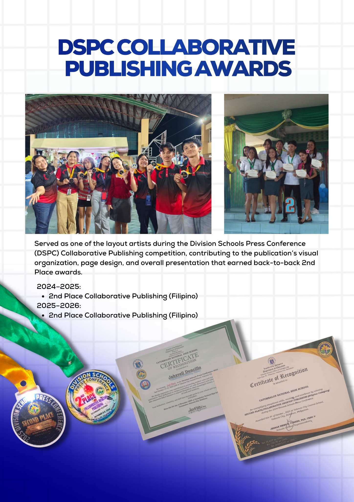
04Back-to-back 2nd Place at the Division Schools Press Conference
View full image ↗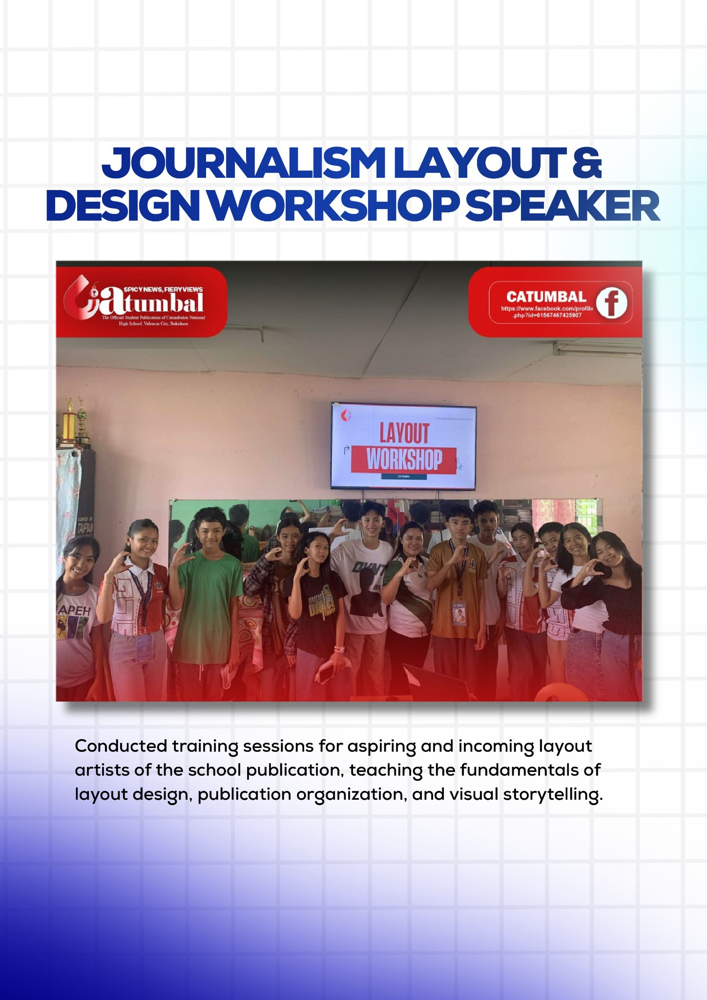
05Speaker on layout fundamentals & visual storytelling
View full image ↗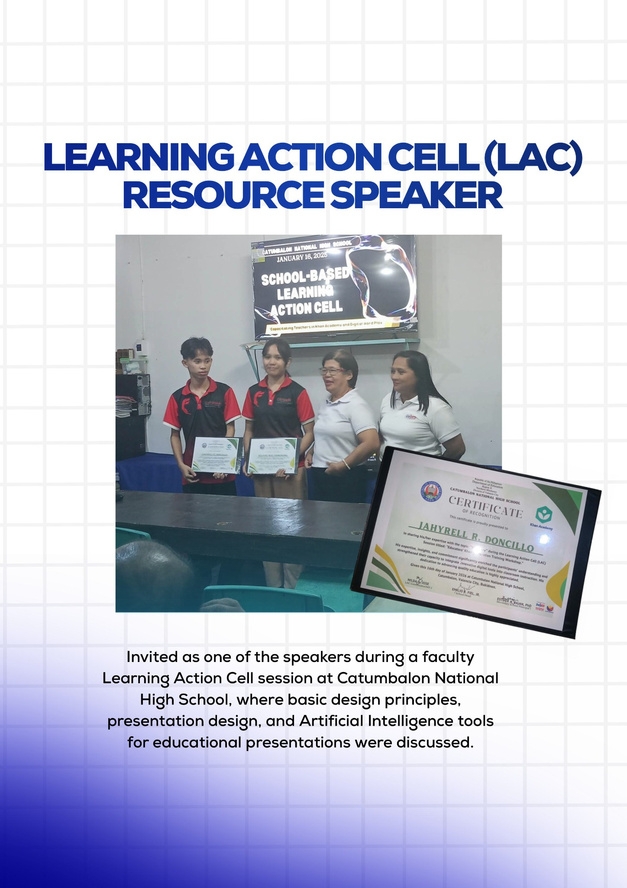
06Resource speaker on presentation design & AI tools
View full image ↗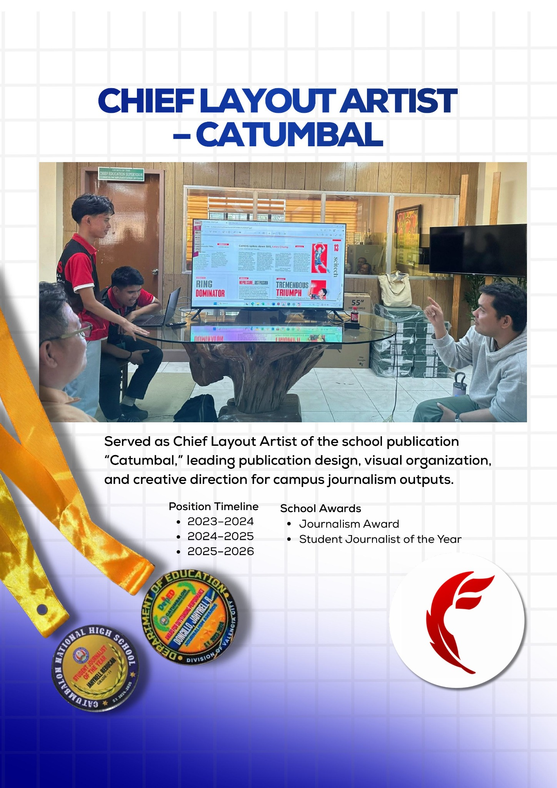
07Catumbal · Publication design & creative direction
View full image ↗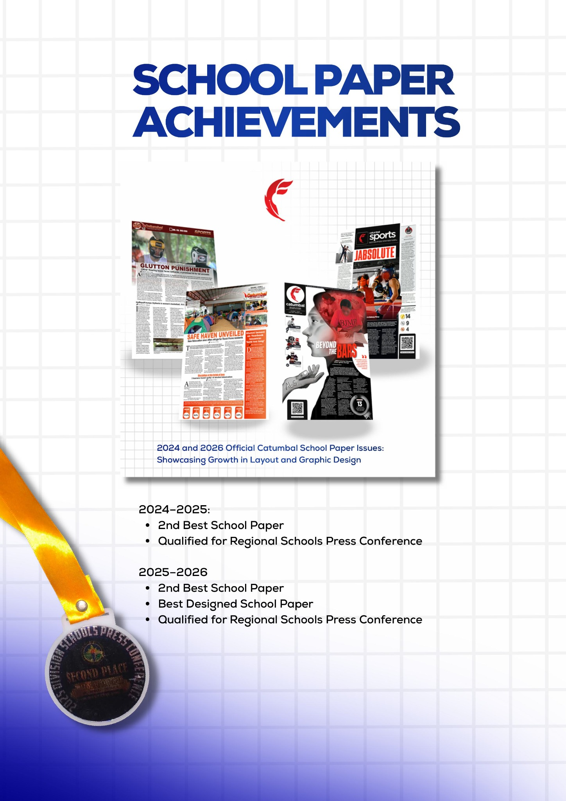
08Best Designed School Paper, 2nd Best School Paper & RSPC qualification
View full image ↗09 / Contact
I'm always open to learning opportunities, creative collaborations, and meaningful projects. Whether it's technology, design, or something in between, I'd be glad to connect.